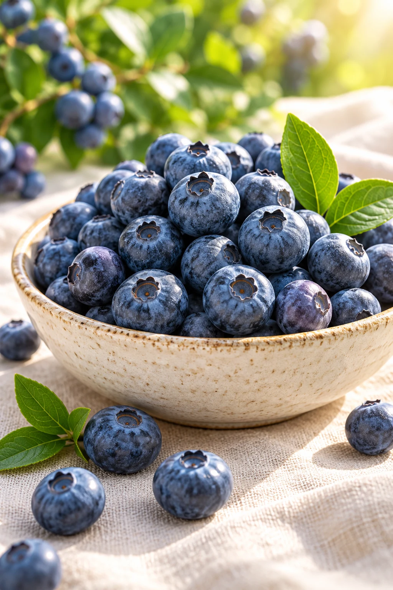

EARLIER SEASON
Eastern Georgia
Where warmer spring days mark the beginning of our growing story.
Continental landscapesNINE ORCHARDS. ONE SHARED STANDARD.
From our orchards to your market. Discover fresh blueberries grown across Georgia’s diverse landscapes, with a connected supply chain from east to west.
One connected growing network
Diverse climates. A longer season.
A considered approach to every step
OUR ROOTS RUN DEEP
Nine orchards, connected by a shared commitment to quality. Across Georgia’s regions, different growing conditions help extend our harvest season and create continuity for our buyers.
Follow the harvestWhere warmer spring days mark the beginning of our growing story.
Continental landscapesLush surroundings and a milder climate carry the harvest into late summer.
Green, sunlit growing regionsStrategically located across Georgia to bring our regions together in one coordinated supply network.
Meet your growing partnerA SEASON THAT GOES FURTHER
Our geography is our advantage. Harvest moves from the earlier eastern regions toward the west, extending fresh supply through the season.
Indicative seasonal sequence. Exact harvest dates and availability depend on orchard, variety and weather. Contact us for the current crop calendar.
SMALL BERRIES. GREAT POSSIBILITIES.

THE TASTE OF A GEORGIAN SUMMERDiscuss fresh supply for retail, wholesale and distribution. We’ll work with you on available grades, berry sizes and the right presentation for your market.
Request our current variety list and orchard-specific harvest windows to plan your buying programme with confidence.
Tell us your preferred pack format, volume and destination. Packaging options and product specifications are confirmed with each quotation.
FROM GEORGIA, WITH CONFIDENCE
Clear communication, thoughtful handling and a coordinated orchard network. We help international buyers plan their blueberry sourcing with the details that matter.
Discuss your export needsAgree product specifications, selection criteria and supporting quality documentation before ordering.
Discuss cooling, handling and temperature requirements for your destination and delivery plan.
Plan destination requirements, transport options and shipment documentation together.
Confirm current varieties, volumes, certifications and lead times directly with our team.
MEET AGRIMAP
Explore a digital twin of your plantation with AgriMap. Connect IoT devices, cameras, drones and weather stations to see more of what’s happening on your land.
Manage each stage, explore data with AI, and streamline harvest recording with QR codes and automatic weighing.
Explore AgriMapLET’S GROW SOMETHING GOOD
Tell us what you’re looking for. Let’s explore how our nine-orchard network can support your business.
Importers · Distributors · Retail partners
We look forward to connecting.